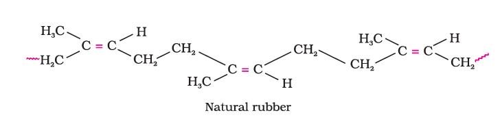

There are two broad types of polymerisation reactions, i.e., the addition or chain growth polymerisation and condensation or step growth polymerisation.
In this type of polymerisation, the molecules of the same monomer or diferent monomers add together on a large scale to form a polymer. The monomers used are unsaturated compounds, e.g., alkenes, alkadienes and their derivatives. This mode of polymerisation leading to an increase in chain length or chain growth can take place through the formation of either free radicals or ionic species. However, the free radical governed addition or chain growth polymerisation is the most common mode.
A variety of alkenes or dienes and their derivatives are polymerised in the presence of a free radical generating initiator (catalyst) like benzoyl peroxide, acetyl peroxide, tert-butyl peroxide, etc. For example, the polymerisation of ethene to polythene consists of heating or exposing to light a mixture of ethene with a small amount of benzoyl peroxide initiator. The process starts with the addition of phenyl free radical formed by the peroxide to the ethene double bond thus generating a new and larger free radical. This step is called chain initiating step. As this radical reacts with another molecule of ethene, another bigger sized radical is formed. The repetition of this sequence with new and bigger radicals carries the reaction forward and the step is termed as chain propagating step. Ultimately, at some stage the product radical thus formed reacts with another radical to form the polymerised product. This step is called the chain terminating step. The sequence of steps may be depicted as follows:
For termination of the long chain, these free radicals can combine in different ways to form polythene. One mode of termination of chain is shown as under:

There are two types of polythene as given below:
G. Natta of Imperia and Karl Ziegler of Germany were awarded the Nobel Prize for Chemistry in 1963 for the development of Ziegler-Natta catalyst.
(ii) High density polythene: It is formed when addition polymerisation of ethene takes place in a hydrocarbon solvent in the presence of a catalyst such as triethylaluminium and titanium tetrachloride (Ziegler-Natta catalyst) at a temperature of 333 K to 343 K and under a pressure of 6-7 atmospheres. High density polythene (HDP) thus produced, consists of linear molecules and has a high density due to close packing. It is also chemically inert and more tough and hard. It is used for manufacturing buckets, dustbins, bottles, pipes, etc.
Teflon is manufactured by heating tetrafluoroethene with a free radical or persulphate catalyst at high pressures. It is chemically inert and resistant to attack by corrosive reagents. It is used in making oil seals and gaskets and also used for non – stick surface coated utensils.
Teflon coatings undergo decomposition at temperatures above 300°C.

The addition polymerisation of acrylonitrile in presence of a peroxide catalyst leads to the formation of polyacrylonitrile.
Acrylic fibres have good resistance to stains, chemicals, insects and fungi.

Polyacrylonitrile is used as a substitute for wool in making commercial fibres as orlon or acrilan.
This type of polymerisation generally involves a repetitive condensation reaction between two bi-functional monomers. These polycondensation reactions may result in the loss of some simple molecules as water, alcohol, etc., and lead to the formation of high molecular mass condensation polymers.
In these reactions, the product of each step is again a bi-functional species and the sequence of condensation goes on. Since, each step produces a distinct functionalised species and is independent of each other, this process is also called as step growth polymerisation. The formation of terylene or dacron by the interaction of ethylene glycol and terephthalic acid is an example of this type of polymerisation.Some important condensation polymerisation reactions characterised by their linking units are described below:
These polymers possessing amide linkages are important examples of synthetic fibres and are termed as nylons. The general method of preparation consists of the condensation polymerisation of diamines with dicarboxylic acids and also of amino acids and their lactams.
(i) Nylon 6,6: It is prepared by the condensation polymerisation of hexamethylenediamine with adipic acid under high pressure and at high temperature.

Nylon 6, 6 is used in making sheets, bristles for brushes and in textile industry.
(ii) Nylon 6 It is obtained by heating caprolactum with water at a high temperature.
Nylon 6 is used for the manufacture of tyre cords, fabrics and ropes.
These are the polycondensation products of dicarboxylic acids and diols. Dacron or terylene is the best known example of polyesters. It is manufactured by heating a mixture of ethylene glycol and terephthalic acid at 420 to 460 K in the presence of zinc acetateantimony trioxide catalyst as per the reaction given earlier. Dacron fibre (terylene) is crease resistant and is used in blending with cotton and wool fibres and also as glass reinforcing materials in safety helmets, etc.
Phenol - formaldehyde polymers are the oldest synthetic polymers. These are obtained by the condensation reaction of phenol with formaldehyde in the presence of either an acid or a base catalyst. The reaction starts with the initial formation of o-and/or p-hydroxymethylphenol derivatives, which further react with phenol to form compounds having rings joined to each other through –CH2 groups. The initial product could be a linear product – Novolac used in paints.

Novolac on heating with formaldehyde undergoes cross linking to form an infusible solid mass called bakelite. It is used for making combs, phonograph records, electrical switches and handles of various utensils.
Melamine formaldehyde polymer is formed by the condensation polymerisation of melamine and formaldehyde.
Copolymerisation is a polymerisation reaction in which a mixture of more than one monomeric species is allowed to polymerise and form a copolymer. The copolymer can be made not only by chain growth polymerisation but by step growth polymerisation also. It contains multiple units of each monomer used in the same polymeric chain. For example, a mixture of 1, 3 – butadiene and styrene can form a copolymer.
Copolymers have properties quite different from homopolymers. For example, butadiene - styrene copolymer is quite tough and is a good substitute for natural rubber. It is used for the manufacture of autotyres, floortiles, footwear components, cable insulation, etc.
Natural rubber may be considered as a linear polymer of isoprene (2-methyl-1, 3-butadiene) and is also called as cis - 1, 4 - polyisoprene.

The cis-polyisoprene molecule consists of various chains held together by weak van der Waals interactions and has a coiled structure. Thus, it can be stretched like a spring and exhibits elastic properties.
Vulcanisation of rubber:
Natural rubber becomes soft at high temperature (>335 K) and brittle at low temperatures (<283 K) and shows high water absorption capacity. It is soluble in non-polar solvents and is non-resistant to attack by oxidising agents. To improve upon these physical properties, a process of vulcanisation is carried out. This process consists of heating a mixture of raw rubber with sulphur and an appropriate additive at a temperature range between 373 K to 415 K. On vulcanisation, sulphur forms cross links at the reactive sites of double bonds and thus the rubber gets stiffened.
In the manufacture of tyre rubber, 5% of sulphur is used as a crosslinking agent. The probable structures of vulcanised rubber molecules are depicted below:

Synthetic rubber is any vulcanisable rubber like polymer, which is capable of getting stretched to twice its length. However, it returns to its original shape and size as soon as the external stretching force is released. Thus, synthetic rubbers are either homopolymers of 1, 3 - butadiene derivatives or copolymers of 1, 3 - butadiene or its derivatives with another unsaturated monomer.
Preparation of Synthetic Rubbers
1. Neoprene: Neoprene or polychloroprene is formed by the free radical polymerisation of chloroprene.
It has superior resistance to vegetable and mineral oils. It is used for manufacturing conveyor belts, gaskets and hoses.
2. Buna – N: You have already studied about Buna-S, in Section 15.1.3. Buna –N is obtained by the copolymerisation of 1, 3 – butadiene and acrylonitrile in the presence of a peroxide catalyst.
It is resistant to the action of petrol, lubricating oil and organic solvents. It is used in making oil seals, tank lining, etc.